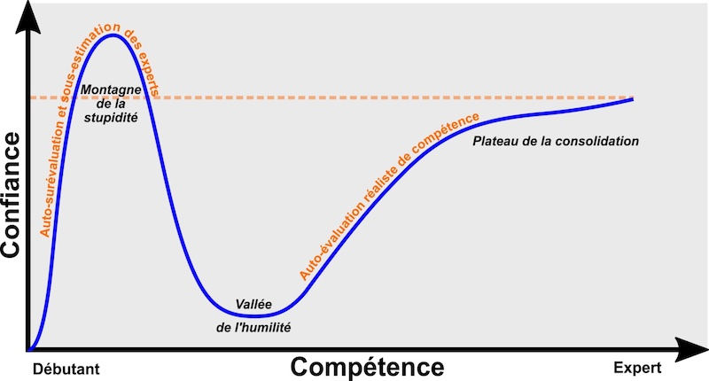
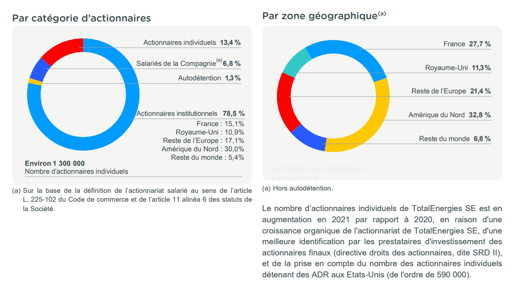
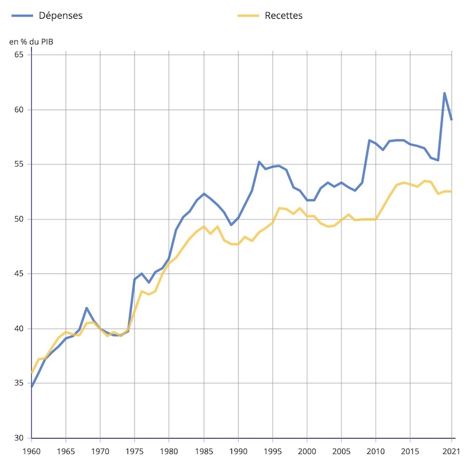

Je vivrai dans le pays avec l’État le moins obèse
Comme j’ai déjà eu l’occasion de l’évoquer, et comme beaucoup d’autres avant moi, j’ai quitté la France dans la deuxième moitié de l’année 2020 pour venir m’établir au Québec. Dans les mois qui ont suivi, j’ai observé un changement qui s’est produit chez moi. J’ai commencé à dédier de plus en plus de mon temps libre au suivi de l’actualité politique, et plus particulièrement à l’actualité économique.
J’ai cherché à comprendre quels étaient les courants de pensée les plus représentés au Québec, au Canada, et en France. Ce faisant, j’ai rapidement pris conscience de l’importance de mes lacunes en économie. J’ai donc décidé de me former aux bases (à quoi sert l’économie, quelles sont les théories dominantes, les grands noms, etc.), car il est illusoire d’espérer former le moindre début d’un avis pertinent en sortie d’un débat politique quand on est incapable de saisir l’essentiel de ce qui s’y raconte. Notons que comme pour beaucoup de sujets complexes, il s’agit d’une illusion particulièrement convaincante. C’est ce qu’ont montré les psychologues américains David Dunning et Justin Kruger en publiant leurs travaux sur l’effet de surconfiance, aussi appelé effet Dunning-Kruger. À l’air des réseaux sociaux où nous vivons, il est plus que jamais nécessaire de nous informer sur les angles morts de la pensée critique que sont nos biais cognitifs. Là-dessus, je vous invite fortement à laisser les émissions d’auto-promotion très largement teintées idéologiquement de Clément Viktorovitch dans la poubelle où elles devraient se trouver, et d’y préférer par exemple des lectures comme le Petit Cours d’Autodéfense Intellectuelle de Normand Baillargeon. Je ne m’étendrai pas plus sur ce sujet. Je vais simplement peser mes mots et affirmer que nos démocraties sont en jeu.

Revenons à nos moutons. Je suppose que l’actualité politique chargée de 2021 et 2022 a contribué à la naissance de cet intérêt. 2021 a vu de nouvelles élections fédérales au Canada, 2022 a été l’année de nouvelles élections présidentielles et législatives en France. Dans ce contexte, l’envie de pouvoir suivre les grandes discussions sans la désagréable impression de systématiquement donner raison à la dernière personne qui a ouvert la bouche a été un moteur important. Plus question donc de me laisser porter par les vagues comme une éponge perdue au milieu d’un océan de propos péremptoires. Je souhaitais me fabriquer une boussole à l’aune de laquelle j’allais éventuellement me positionner sur ce que j’entendais.
La période de forte actualité politique dont j’ai parlé a été la première à autant capter mon attention. Mais une question demeure. Pourquoi, alors que les scrutins sont maintenant clos pour quelques années encore, n’ai-je pas arrêté de consacrer beaucoup de temps à la lecture de livres et d’émissions qui traitent du sujet ? Pourquoi au contraire ai-je le sentiment d’y consacrer toujours plus de temps, au point que je dois me forcer parfois à faire autre chose ?
Je pense que l’effet Dunning-Kruger mentionné plus tôt est une première partie de l’explication. Mes connaissances en économie partant de zéro, mon parcours a commencé le plus à gauche de la courbe sur le rapport entre la confiance et la compétence. Soit une compétence de zéro, et une certaine lucidité sur ce niveau de compétence résultant sur un niveau en confiance nul en mes jugement. Une fois l’ascension entamée, quelle angoisse de songer que l’on n’a pas encore atteint le sommet de la montagne de la stupidité ! Impossible de se situer, nous devons nous satisfaire d’estimations qui ont une valeur très limitée. Nous ne pouvons estimer notre progression qu’à l’aune de celles des experts, à supposer que l’on soit capable de les identifier. La Terre est plate pour qui parcourt sa surface. Le météo est brumeuse, et nous ne disposons pas d’un GPS pour nous repérer sur cette courbe, dont la pente est du reste beaucoup moins lisse dans la pratique. Si bien qu’au premier faux plat, nous pourrions nous laisser berner, et croire que le sommet est atteint, que nous allons maintenant faire cap vers la confortable vallée de l’humilité (suffisamment confortable en tout cas pour qui n’a pas l’intention de faire de l’économie un métier). Mais cette angoisse de naviguer à vue dans un brouillard de connaissances bancales ne suffit pas à expliquer que je me sois encore envoyé cinq heures de Mélenchon la semaine passée. Mes compétences en baseball, en botanique ou en apiculture sont inexistantes, et comme pour la plupart d’entre vous qui en êtes au même point, je le vis très bien. Pourquoi alors cette soif grandissante de contenus en rapport avec l’économie et la politique économique, avec un intérêt particulier pour la France, où je ne vis pourtant plus ?
Il m’est récemment apparu que je devrais sans doute mettre cela sur le compte d’une question qu’il reste à trancher. Si mon parcours d’immigration suit son cours naturel, un jour relativement proche viendra où il me reviendra à moi-seul de choisir entre le Canada et la France, le pays dans lequel vivre, travailler et payer des impôts. Je suis arrivé au Canada muni d’un permis avec une date d’expiration. Cette date d’expiration de mon statut d’immigration correspondait à l’idée que je me faisais de mon expérience canadienne : aussi longue qu’il me plairait et qu’elle aurait un sens professionnel, mais se concluant néanmoins nécessairement par un retour en France, à la vie que j’avais mise en pause. Une petite voix à l’intérieur de ma tête me rappelait régulièrement cette date d’expiration. Mais à mesure que le temps passait, et que le quotidien devenait progressivement tout aussi réel que celui laissé en France, cette petite voix commençait à changer de discours. Ce qui apparaissait comme une évidence, prend aujourd’hui la forme d’un choix qu’il faudra faire, avec des conséquences heureuses et malheureuses. Cette éventualité de choisir un jour entre deux pays a fait naître de nombreuses questions qui ne me seraient pas venues à l’esprit si je ne m’étais pas éloigné. Sans la perspective d’une société qui fonctionne avec des règles différentes, je n’aurais sans doute pas été amené à creuser le fonctionnement de ces règles, et cherché à les comparer à celles de la société qui m’a vu grandir. Pour ne prendre que ces deux exemples : combien de français estiment bien connaître le fonctionnement de leur système de retraite ? et combien ont une idée du montant exact qu’ils donnent annuellement à l’État, tout impôt confondu (salaire, consommation, immobilier, mobilier, etc.) ? Pour des questions comme celles-ci qui touchent à la fiscalité et aux affaires sociales, l’économie est un prisme par lequel il me semble important d’apprendre à bien lire si je veux pouvoir juger correctement les grandes orientations politiques. Il se trouve que développer cette pensée critique est pour le moment plus prioritaire pour moi que le baseball, la botanique ou l’apiculture. Car au-delà d’autres facteurs plus personnels qui joueront évidemment un rôle important, il est clair à présent que ces décisions politiques influenceront nettement celle qu’il me reviendra directement de prendre dans quelques années.
Justices sociales
Personne ne dit souhaiter voir émerger plus d’injustices sociales. Si bien qu’en politique, le refrain habituel de l’opposition qui consiste à dénoncer vigoureusement d’éventuelles régressions sociales en réclamant plus de justice sociale n’a de chance de convaincre que celles et ceux qui partagent la même intuition de ce qu’est la justice sociale. Ainsi, les prises de parole successives de Jean-Luc Mélenchon qui porte le programme commun de la Nupes relèvent plus souvent du discours militant qui ne convaincra que ceux qui le sont déjà au départ, que du véritable projet politique qui laisse la moindre porte ouverte à la discussion avec ceux qu’il décrit comme les “vampires de l’économie” ou encore les “parasites de la société”.
Le véritable enjeu n’est pas de savoir si oui ou non, il faut plus de justice sociale, mais d’investir dans la bonne, celle qui a les meilleures chances de sortir durablement un maximum de personnes de la précarité financière. Et quand on commence à réfléchir à cette question, on touche alors à la partie difficile du problème, celle qui ne se règle pas à grands coups d’invectives dans la rue ou à l’Assemblée Nationale.
Les personnes les plus envieuses ou celles qui ont tendance à ne voir le problème que par le bout de la présente répartition des ressources défendent la légitimité de l’État à appauvrir les riches pour enrichir les pauvres. La réponse à privilégier systématiquement consiste alors à couper tout ce qui sort un peu trop du rang. On tolérera que vous leviez la tête l’espace d’un instant afin de profiter d’un peu de hauteur, mais on vous regardera de travers si vous choisissez de rester là haut trop longtemps.
En France comme au Canada, nous vivons dans un système où la propriété privée existe, ce qui permet au capitalisme d’exister. Mais de quel capitalisme parlons-nous ? Zola décrivait celui du 19ème siècle. Un capitalisme plus pur, débarrassé des freins qui gênent l’enrichissement des propriétaires d’entreprises, tels que le salaire minimum, la CSG ou encore les congés rémunérés. Je me réjouis de ne pas être né ouvrier à cette époque. Mais pour autant, la question de la juste distribution de la valeur créée par les entreprises est-elle aujourd’hui réglée ? De toute évidence non. Tant que tous les Jean-Luc Mélenchon, Sandrine Rousseau ou Cécile Duflot de France et du Canada trouveront une oreille sensible à leurs discours, la question ne pourra pas être considérée comme réglée. Autant dire donc qu’elle ne le sera vraisemblablement jamais. Ce qui m’ennuie, c’est que quand j’écoute ces prises de paroles, et que je m’intéresse aux projets de société qui sont présentés, j’ai le sentiment que le seul chemin qui m’est offert pour m’enrichir, est l’attente plus ou moins passive d’un changement profond du système en faveur de plus de répartition. Alors qu’en réalité, beaucoup dépend directement de mes choix personnels, qui ne concernent en rien les carrières politiques de tel ou tel gourou.
On peut devenir aigri en passant une vie à écouter ces gourous nous persuader que la richesse des uns est la cause du malheur des autres, penser que l’économie est un jeu à sommes nulles et que tout ira mieux quand on aura enfin un tel au pouvoir, quand on se sera débarrassé des parasites en les taxant à un taux marginal de 90%, quand la France sera débarrassée de ses milliardaires, ou encore quand on aura contraint les vampires de l’économie de rendre l’argent qu’ils ont volé en taxant leur patrimoine mobilier.
Thomas Piketty est la référence des économistes qui travaillent sur le sujet des inégalités. Mais le remède qu’il suggère à la maladie qu’il diagnostique est loin de faire consensus. Il est à peu près certain que si, selon une de ses recommandations, l’État m’avait débloqué 200 000 euros à mes 25 ans, je les aurais dilapidés en moins d’un an. Si vous pensez que vous n’en auriez pas fait autant, vous faites alors partie de la minorité qui comprend qu’un chèque de 200 000 euros à 25 ans ne vous rend pas riche. À mes 26 ans, j’aurais milité pour la victoire du candidat qui offre un chèque de 300 000 euros aux nouveaux trentenaires. Et ainsi de suite jusqu’à épuisement des caisses, qui arrivera le jour où le pays fera banqueroute et qu’il n’y aura plus personne à taxer pour espérer rattraper le coup. J’aurais pu me retrouver à 50 ans, toujours en train de blâmer ceux qui ont eu moins de malchance que moi pour tous mes problèmes d’argent, en oubliant qu’une bonne partie du problème vient de mon manque d’éducation financière. Car non, l’économie n’est pas un jeu à sommes nulles. C’est un jeu à sommes qui peuvent être positives ou négatives et qui dépendent d’un nombre important de facteurs, dont un essentiel est la confiance des individus dans leur avenir. Prétendre qu’appauvrir les riches enrichit les pauvres, c’est le résultat d’une pensée économique qui interprète l’histoire des deux derniers siècles en commençant par le présent, et qui ne se donne pas la peine d’aller jusqu’au début. C’est par exemple ce que fait Thomas Piketty en mettant le dynamisme économique de la France des trentes glorieuses au crédit d’un taux d’imposition historiquement élevé avant tout le reste.
La vérité que tous les adolescents de 25 ans ont besoin d’entendre, c’est que l’on ne sort pas durablement de la pauvreté en étant arrosé d’argent public. La solution est un mélange de chance, de temps, et de tempérament. La propagande gauchiste met une emphase souvent déraisonnable sur le facteur chance, refuse de voir dans quelle mesure le temps peut jouer en faveur des fortunes même les plus modestes, et s’interdit de parler de tempérament. Le tempérament est pourtant essentiel. Il est nécessaire pour chercher à améliorer ses compétences et ainsi augmenter son revenu, pour apprendre à gérer un budget, pour se former à l’investissement. Une politique qui mise tout sur la redistribution équilibre le facteur chance, ce qui est louable. Mais ce faisant, elle ne fait qu’acheter du temps en maintenant sous perfusion une économie mourante à l’aide d’argent confisqué aux autres. Quant au tempérament, vertue nécessaire à qui recherche l’épanouissement personnel dans une économie saine, elle le détruit. Le tempérament, les valeurs de mérite et de responsabilité que Mélenchon méprise tellement, sont le prix de la gratuité de l’argent public.
Bien entendu, la multiplication des niches fiscales qui permettent à certains des plus aisés de payer moins d’impôts que la classe moyenne, c’est une injustice. Mais c’est un problème différent sur lequel je reviendrai plus tard. En éludant systématiquement les points que je viens de mentionner et qui sont pourtant d’une importance capitale, et en promettant toujours plus de mesures démagogiques et économiquement hors sol, les politiciens et politiciennes d’extrême gauche entretiennent le clivage entre le travail et le capital. C’est bon pour leur projet politique, mais ça ne sert pas la société. Au contraire, cela entretient un dégoût toujours plus vif de l’économie pour les personnes qui auraient le plus intérêt à s’y former.
À l’image des partis d’extrême droite qui, en glorifiant la culture du pays au point de la fantasmer, finissent par nuire à son rayonnement en maintenant les individus assignés à résidence nationale, l’extrême gauche, dans sa lutte éternelle et exclusive contre les injustices de répartition, aggrave le problème de l’inégalité des chances, s’assurant ainsi de maintenir les individus assignés à résidence sociale. Voilà les deux visages du défaitisme face à la mondialisation avec laquelle certains ont d’avance décidé de rompre plutôt que de chercher à en tirer le meilleur parti.
Pas de riches sans un État riche
Parmi les arguments récurrents opposés à la promotion du mérite, on trouve cette idée que les riches entrepreneurs ne méritent pas leurs fortunes, et ce notamment car pour développer leurs entreprises, ils se sont appuyés sur des infrastructures logistiques et énergétiques publiques qui ont été des conditions à leur succès. Si bien qu’une fois ce succès atteint, ces entrepreneurs devraient rendre l’argent au peuple. Curieuse conception qui semble conduire assez directement à cette idée selon laquelle tout entrepreneur à succès devrait accepter de léguer sa fortune à l’État qui en fera à coup sûr un meilleur usage. Voilà qui me paraît audacieux, et qui laisse également de côté un certain nombre de points.
Pour commencer, les riches paient des impôts. On peut considérer qu’ils n’en paient pas suffisamment, et sur la base de ce constat du reste, prendre des mesures différentes pour y remédier. Le fait est qu’ils en paient, que ce soit sur leurs revenus personnels, ou ceux de leurs entreprises.
Ensuite, en tant qu’actionnaires de certaines grosses entreprises, les institutions de l’État profitent de la rémunération du capital au même titre que des actionnaires individuels, salariés ou non. En plus des impôts sur les entreprises, l’État récupère ainsi par ce moyen de l’argent qui va alimenter des caisses de retraites complémentaires, des assurances vie, ou autres institutions. Voilà un détail important qu’il est bon de rappeler entre deux indignations théâtrales faites sur la base des bénéfices jugées indécents de certaines entreprises qui finiront dans les poches des insatiables actionnaires sous forme de dividendes. Et ceci est sans même rappeler que l’État impose ensuite une taxe sur ces dividendes.

Estimation au 31 décembre 2021 de la structure de l’actionnariat de Total, sur la base de la demande d’identification des actionnaires réalisée à cette date en application de l’article L. 228-2 du Code de commerce. Source : https://totalenergies.com/fr/actionnaires/action-et-dividende/structure-actionnariat
Également, il faut veiller à ne pas tomber dans une forme de mystification de l’État facilitateur. Cette idée étrange qui semble tout droit sortie d’une partie du jeu Civilisation, et selon laquelle il y avait le néant, puis l’État déclara “que les infrastructures soient”, et les infrastructures furent, puis vinrent après les entrepreneurs qui prospérèrent sur la base de celles-ci. La communauté dans son ensemble bénéficie de nombreux acquis qui sont bien souvent le fruit du travail d’individus privés qui ont cherché à s’enrichir. L’État vient après, s’associe en octroyant d’éventuelles subventions ou crédits d’impôt, et s’approprie éventuellement l’outil de production en nationalisant pour le meilleur comme pour le pire. En France, au Canada comme dans d’autres pays développés, nombreuses sont les entreprises aujourd’hui publiques qui sont nées d’initiatives venant du privé. À ce jour, la France est beaucoup moins dynamique qu’elle a pu l’être à certaines époques où l’emprise de l’État était moins forte. La réglementation s’alourdit années après années si bien que la création d’un nouveau marché est très compliquée. Nous avons vu les difficultés que rencontre une entreprise comme Uber qui peine à s’y installer sans le soutien d’un ministre de l’économie. Il arrive aussi que l’État investisse de l’argent public pour sauver une entreprise de la faillite afin de conserver des emplois et des actionnaires, et donc in fine des recettes pour le trésor public. Quand cela se produit, nous sommes généralement alertés par les crieurs publics qui redoublent d’inventivité pour les analogies. On entend alors que tant de milliards d’euros auraient pu alimenter toutes les cantines de France pendant un an, ou bien financer tel ou tel hôpital. Toutes les analogies sont permises, et après tout, on pourrait tout autant soutenir que cet argent aurait dû servir à financer de nouvelles entreprises mieux gérées, du matériel pour l’armée, ou bien des campagnes de sensibilisation à la consommation excessive de sucre, d’alcool et de tabac. Bref, tout cela pour dire que s’il est vrai que l’État peut contribuer de diverses façons à la création ou à l’activité d’une entreprise, il faut veiller à ne pas trop exagérer la part du mérite qui revient à l’ensemble des contribuables, afin de justifier le droit de ceux-ci à recevoir une plus grande part des bénéfices. Car si l’on considère l’argument recevable, alors l’inverse l’est tout autant. Et par conséquent, le soutien à une entreprise privée en faillite justifie la levée d’un nouvel impôt si l’on fait la démonstration que celle-ci sera rentable dans x années. Personnellement, je ne tolère cette musique qu’à doses homéopathiques. Pour le reste, je préfère choisir moi-même mes investissements.
Enfin, si un riche entrepreneur a tiré profit des infrastructures d’un pays développé pour créer son entreprise, alors n’importe quelle autre personne aurait dû pouvoir en faire autant. Si personne d’autre ne l’a fait, il doit y avoir des raisons. Reprenons les trois critères que j’ai proposés plus tôt. La chance a pu jouer différemment. Il est possible que notre riche entrepreneur soit né dans une famille aisée avec un important réseau de connaissances qui lui ont facilité la tâche. Quelqu’un d’autre devra travailler beaucoup plus dur pour créer les mêmes opportunités. Il est également possible que notre riche entrepreneur ait disposé de tout le temps dont il avait besoin. Tout le monde n’est pas en mesure d’investir 70 heures de travail par semaine dans la création d’une entreprise.
Enfin, si l’on ne garde que les personnes pour qui l’opportunité s’est présentée et qui sont parvenues à se constituer une épargne équivalente à une année de dépenses dont elles peuvent disposer, combien parmi elles seront prêtes à abandonner leur C.D.I. pour travailler 70 heures par semaine et prendre le risque de tout perdre ? La chance ne sourit pas pareil à tout le monde, et certaines personnes ont plus de temps que d’autres, et oui c’est injuste. Mais certaines personnes ont aussi plus de tempérament et de courage que d’autres, et il est tout aussi injuste de ne pas leur reconnaître quand cela paye, et de se montrer envieux. À trop souvent balayer d’un revers de la main l’avantage compétitif de ceux qui se démarquent par leurs succès, on finit par trouver parfaitement naturel de vouloir d’avantage les punir pour la chance qu’ils ont supposément eue. Cela correspond-il vraiment à la réalité ? Et à supposer que ce soit le cas, avons-nous bien pesé les conséquences d’une politique fiscale trop confiscatoire ? Représentez-vous un village de dix pêcheurs. À l’aide de leur canne, chacun obtient chaque jour un poisson pour sa consommation quotidienne. Un jour, l’un d’eux prend la décision de sauter un repas sur deux pendant un mois. Il met à profit le temps ainsi gagné pour mettre au point un filet. Un jour, il part en mer avec ce filet et récolte dix poissons. Comme il a toujours voulu voyager, il décide de consacrer le temps de pêche qu’il s’est libéré à l’élaboration d’une méthode pour conserver le poisson. Mais entre-temps, la jalousie gagne les autres pêcheurs forcés d’aller pêcher tous les jours. Alors, ils s’organisent pour contraindre le premier à collectiviser son filet. Dorénavant, le filet doit être confié chaque jour à un pêcheur différent qui distribue dix poissons au village.
Je vois au moins deux lectures possibles de cette histoire. L’une considère que la communauté dans son ensemble est gagnante dans la mesure où chacun n’est plus contraint qu’à pêcher un jour sur dix et peut continuer de manger tous les jours. Il peut donc consacrer le reste de son temps à d’autres activités. L’autre considère la situation finale injuste pour le pêcheur qui a fait l’effort de fabriquer le filet, dans la mesure où son objectif était de voyager loin de chez lui, ce qu’il ne peut pas faire sans disposer comme il l’entend de sa récolte. Si vous penchez pour cette dernière, alors vous devez avoir une fibre libérale, vous accordez de l’importance à la propriété privée et vous estimez généralement que le droit d’un être humain d’exister en dehors d’une communauté est un droit fondamental. Si vous penchez pour la première, alors vous devez plutôt être collectiviste, vous estimez que l’exercice de la propriété privée a plutôt tendance à être néfaste pour le bien de la communauté que vous placez au-dessus de l’épanouissement personnel, et c’est votre droit. Songez simplement que la motivation profonde du pêcheur qui a conçu le filet n’a jamais été d’acheter du temps d’oisiveté. Son objectif, ce qui l’a déterminé à s’affamer pendant un mois, c’était la perspective d’un voyage. Les autres pêcheurs auraient pu choisir d’imiter le premier, mais ils ne l’ont pas fait. En réquisitionnant son filet, la communauté l’a privé de sa source de motivation. S’il avait su cela à l’avance, aurait-il alors trouvé le courage de concevoir ce nouvel outil dont il n’était pas même certain qu’il fonctionnerait ?
Jean-Luc Mélenchon nous rappelle que le capitalisme est un système qui repose sur la gratuité du travail humain. J’affirme que son système à lui repose sur la spoliation de la propriété privée et sur la gratuité de l’innovation. L’égalité comme règle de départ a un coût : c’est le nivellement par le bas du confort de chacun. Karl Marx l’avait compris, et considérait que le communisme ne pouvait naître que des cendres d’un système capitaliste favorable aux inégalités. Un chapitre du Capital que Fidel Castro aurait mieux fait de réviser avant d’appliquer le miracle collectiviste sur une île dont l’économie largement dépendante des États-Unis restait à consolider. Mais même appliqué dans les règles de l’art à un pays déjà développé, n’est-il pas possible que les héritiers collectivistes d’un système ayant laissé les inégalités apparaître finissent par en user les produits au point qu’ils seront inutilisables ? Une fois perdu le tempérament de ceux qui ne revendiquaient pas autant le droit à la paresse, sauront-ils refabriquer ces produits ou resteront-ils pauvres ? De quelles garanties dispose le pêcheur que son filet sera bien traité par ceux qui ne l’ont pas fabriqué, et qui ne peuvent donc pas en comprendre la vraie valeur ? Peut-être plus que tout autre chose, est-ce cet effet qui est à l’œuvre en France et qui entraîne la dégradation progressive des services publics alors que toujours plus de budget leur est alloué.
De la moralisation de l’impôt
L’impôt, c’est faire société ensemble, nous dit la députée européenne Aurore Lalucq dans un débat de l’émission 28 minutes diffusée sur ARTE qui pose la question de la taxation des plus riches comme solution à tous nos problèmes.
Voilà une formule qui semble tomber sous le sens, mais qui ne veut pourtant pas dire grand chose tant la signification concrète de “faire société” varie d’une bouche à l’autre. Entre protection sociale, défense nationale, santé, éducation ou encore soutien à l’économie, chacun jugera différemment la légitimité de telle ou telle dépense publique selon ses priorités. S’il doit bien se trouver quelques originaux particulièrement fâchés, la part de la population qui considère que l’impôt ne sert en aucune façon la société est selon toute vraisemblance peu représentée. On ne trouve plus depuis la fin de l’Ancien Régime, de prétendants au pouvoir sérieux qui soutiendraient que le financement de la défense nationale est inutile. Néanmoins, si le principe de l’impôt n’est pas remis en question, son utilisation par l’État l’est constamment. Pour justifier une nouvelle taxe, l’État doit faire la démonstration de sa nécessité.
Distinguons les dépenses publiques au moyen des catégories suivantes. La première inclut les dépenses qui relèvent de la souveraineté de l’État sur son territoire, soit le financement de l’armée, de la police, de la justice ou encore de la diplomatie. La deuxième inclut toutes les dépenses de nature redistributive et comprend de manière assez large : l’hôpital public, l’éducation nationale, les retraites, le chômage, l’aide au logement, etc. Enfin, la troisième inclut l’ensemble des mesures de nature incitative qui visent à favoriser un comportement plutôt qu’un autre. On y trouve tous les prélèvements spéciaux sur des produits comme le sucre, l’alcool et le tabac pour financer la sécurité sociale, ou encore l’écotaxe sur l’électronique et l’essence pour financer le recyclage et la transition énergétique. On peut également mettre dans cette catégorie d’autres types de dépenses qui prennent la forme de crédits sur l’impôt pour encourager entre autres l’embauche dans les entreprises de certaines catégories sociales (personnes handicapées, travailleurs immigrés, personnes âgées, etc.).
Identifier la catégorie de l’impôt que l’on examine est utile si vous avez l’intention d’en discuter la légitimité, car de celle-ci dépendra la nature des reproches que l’on vous fera. Par exemple, en vous opposant à une augmentation du budget de la justice ou de la police, on vous accusera d’être un anti-républicain qui souhaite voir émerger le chaos et la guerre civile. Souhaiter une réduction du budget de l’armée fera de vous un militant pacifiste naïf qui n’a rien appris du dialogue mélien qui nous enseigne que “la justice n’entre en ligne de compte dans le raisonnement des hommes que si les forces sont égales de part et d’autre”, et que “dans le cas contraire, les forts exercent leur pouvoir et les faibles doivent leur céder”. Si c’est une augmentation de l’allocation chômage, des pensions des retraités ou du budget de l’éducation nationale que vous souhaitez revoir à la baisse, soyez prêt à endosser le rôle du cruel petit droitardé qui n’en a que faire de la misère des gens. C’est parce qu’il y a des gens comme vous qui refusent de participer à la solidarité nationale que l’état des services publics ne cesse de se dégrader et que des lits disparaissent des hôpitaux. Enfin n’escomptez pas toucher à la taxe sur les sodas sans répondre de votre intention cachée de rendre le monde diabétique pour le profit de l’industrie pharmaceutique. Vous devrez également justifier que vous n’êtes pas un climatosceptique si vous parlez de supprimer la taxe sur les aéroports. Bref, on pourrait probablement en écrire des pages entières.
En somme, qui s’oppose à un impôt de première catégorie est un anarchiste; qui s’oppose à la deuxième est un sans-cœur; et qui s’oppose à la troisième est un ultralibéral. Peut-on vraiment considérer qu’une personne qui ne souffre que d’un seul de ces trois vices refuse pour autant de faire société dans toutes ses définitions ? Bien sûr que non, on peut être anarchiste et défendre la vision d’une société démilitarisée avec une économie inclusive fondée sur des valeurs de solidarité et de partage. Un sans-cœur peut défendre sa vision d’une société d’État de droit avec une économie capitaliste contrainte à s’occuper elle-même de la gestion de ses sous-produits négatifs. Finalement, un ultralibéral promouvra une société avec une économie capitaliste non dirigée et un État qui mise tout sur l’éducation et la responsabilisation des individus.
Tout comme on ne peut pas simplement réclamer plus de justice sociale sans se poser la question de quelle justice, on ne peut pas se contenter d’appeler à faire société sans tenir compte du type de société dans laquelle les contribuables ont envie de vivre sans risquer de se tromper de débat. Prétendre que critiquer l’impôt est synonyme d’y être opposé par principe suppose d’une part que tous les impôts se valent, et d’autre part que l’impôt résout tout. Or on l’a vu, les leviers de la redistribution et de l’incitation en particulier permettent de justifier n’importe quelle augmentation d’impôt tant que sa finalité est louable, car refuser cette augmentation, c’est s’opposer à priori à la finalité en même temps qu’au moyen. C’est cette forme de moralisation de l’impôt qui a contribué à faire de la France le pays de l’OCDE où la pression fiscale est la plus forte si l’on laisse de côté l’exception danoise, et où la dépense publique est passée de 35% à 60% du PIB en l’espace de soixante ans. Du haut de sa dette publique colossale qui ne cesse de se creuser, la France vit-elle pour autant plus heureuse que l’ensemble de ses voisins ?
Dépenses et recettes publiques françaises de 1960 à 2021. Source: Insee, comptes nationaux - base 2014
L’ironie de cette triste envolée de la friction fiscale est qu’il se pourrait qu’un impôt moins prohibitif permette en réalité d’augmenter les recettes du trésor public en élargissant l’assiette. En clair : si l’impôt est moins élevé, plus de personnes sont prêtes à le payer de bonne volonté et les entrepreneurs sont plus motivés à investir pour augmenter leurs revenus futurs. À augmenter perpétuellement le poids de l’impôt sur les plus riches à grand coup de mesures fiscales ciblées, on finit par atteindre les limites d’un système perçu comme injuste par ceux qui doivent proportionnellement payer beaucoup plus que l’immense majorité. Or, c’est justement ce système en deux poids deux mesures qui pousse les riches à l’optimisation fiscale. Quand la tranche d’imposition marginale est si élevée que l’effort supplémentaire ne vous rapporte plus qu’un quart de la valeur que vous avez créée, vous n’avez plus que trois options : accepter d’être pillé, renoncer à faire cet effort ou vous révolter. L’expatriation, l’optimisation et la fraude fiscale sont les formes modernes de révolte face à un impôt devenu trop confiscatoire. Absolument rien de surprenant là-dedans. Du reste, une telle réforme fiscale devrait s’accompagner de la suppression des nombreuses niches qui permettent à ceux qui en bénéficient de ne payer que des miettes de l’énorme part de leur gâteau qu’ils sont supposés céder au trésor public. Mais si l’État commence par être moins gourmand, alors peut-être cela aidera à faire passer la pilule. Voilà le genre de courage de la part de ses dirigeants que le peuple devrait appeler de ses vœux. Mais étant donné que ces niches sont autant de “cadeaux” fiscaux qu’ils peuvent décider d’octroyer ou retirer par pur clientélisme politique, et que par ailleurs la majeure partie des oppositions de gauche comme de droite martèle en coeur que baisse d’impôt est synonyme de dégradation du service public, il ne faut pas s’attendre à grand chose dans l’immédiat. En attendant, la révolte silencieuse est la règle de ce jeu cynique auquel se livrent ceux qui ont le temps et les ressources. Cette hypothèse est notamment formulée par l’économiste libéral américain Arthur Laffer et illustrée par sa fameuse courbe de Laffer.
Une désolante lucidité que l’on retrouve d’ailleurs dans ces deux commentaires présentés comme opposés mais qui pourtant s’accordent essentiellement sur la même réponse à un sondage Youtube de la chaîne HugoDécrypte qui demandait à ses abonnés s’ils sont pour ou contre la superconfiscation des profits des multinationales (dans le contexte il s’agissait sans la nommer de Total).
Chassez le communisme, il revient au galop
Les Karl Marx de notre temps sont en train de réussir leur opération de propagande de fausses idées populaires. Si bien qu’il apparaît aujourd’hui que la seule réponse à un système économique capitaliste imparfait qui sache séduire une opposition de plus en plus déprimée, soit en rupture totale avec lui. Dans un excès de pessimisme et un flagrant déficit de rationalité, de plus en plus de camarades plaident pour jeter l’eau du bain capitaliste aux égouts, quitte à se débarrasser avec elle de ses fondements libertariens. Voilà qui me paraît profondément déprimant.
Alors j’exagère bien entendu, je m’amuse à provoquer. Je ne dis pas sérieusement que la France est un pays communiste. Mais je m’inquiète de voir ce que je crois voir, à savoir un basculement de l’opinion publique vers des extrêmes qui s’efforcent de la garder captive en la caressant dans le sens du poil. Si la dépense publique représentait 59% du PIB il y a un an, et qu’elle en représente aujourd’hui 60%, cela n’a sans doute pas changé brutalement le quotidien de 68 millions d’habitants. Mais, grenouilles que nous sommes, plongées dans un bassin tiède, peut-être n’avons-nous pas remarqué que la température commençait à monter, et que l’eau allait bientôt nous ébouillanter. Où placer la limite ? Celle-ci pourra toujours être continuellement revue à la hausse à mesure que l’on continuera notre fuite en avant par des impôts de plus en plus confiscatoires. Le ton est déjà donné par notre nouvelle Assemblée Nationale française transformée en cour de récréation avec une prime à celui qui tape le plus fort sur les riches. Et puis j’insiste à nouveau : sans non plus prétendre savoir placer le niveau idéal d’imposition pour la France de notre époque, constater que plus de la moitié des richesses sont captées par un État qui semble étendre ses tentacules à l’infinie, voilà qui me paraît d’ores et déjà particulièrement préoccupant quand on a le soucis des libertés individuelles.
Nous avons dans notre pays, la pire des offenses : le premier milliardaire du monde.
— Jean-Luc Mélenchon (@JLMelenchon) January 28, 2023
Oui, les riches sont responsables du malheur des pauvres.
Accumuler de l’argent est immoral, puisque ce qui est accumulé, c’est ce qu’on a pris aux autres. pic.twitter.com/FmNpMi0DoY
Pourquoi Jean-Luc Mélenchon nous dit-il qu’accumuler de l’argent est immoral ? Soit il se base sur une lecture de l’économie bien différente de la mienne, soit il s’agit plutôt d’une formule provocatrice pour illustrer le problème suivant. Reprenons mon histoire de pêcheurs. Imaginons qu’une année, une anomalie climatique survienne entraînant la diminution brutale du nombre de poissons disponibles. Le premier pêcheur qui vient tout juste de terminer la fabrication de son filet a hâte de l’essayer. Il part une heure avant tout le monde, et récolte les dix seuls poissons disponibles pour la journée. Dans cette situation exceptionnelle, interdire aux pêcheurs de récolter plus qu’un poisson par personne et par jour sera sans doute jugé légitime par l’ensemble de la communauté.
Ce qui est immoral, ce n’est pas l’accumulation d’argent, c’est son utilisation pour nuire au bonheur du reste de la collectivité. S’il y a assez de poissons dans la mer pour que chacun en pêche mille par jour, alors le premier ne fait de mal à personne s’il en récolte dix (à part aux poissons bien entendu, mais c’est un autre sujet). Si un jour, Dieu nous en préserve, une pénurie de Pépitos survient, il sera toujours temps de rationner en limitant le nombre de boîtes que chacun peut acheter pour sa consommation. En attendant, si pendant douze mois, je désire accumuler suffisamment d’argent dans le but d’en commander une pleine remorque et organiser la soirée Pépitos de l’année, je vous saurai gré de bien vouloir me laisser faire comme bon me semble. Croire que plus d’impôts résorberont une crise, c’est croire que la morphine fera repousser la jambe d’un blessé de guerre. Il est plus que temps de cesser de croire que la solution à nos problèmes se trouve toujours dans la poche des autres, et de se montrer un peu plus créatif.
Ainsi, pour accélérer la transition énergétique, mieux vaudrait-il peut-être abandonner le poison timidement lent de l’impôt dissuasif administré à Total qui dispose de toute façon d’assez de trésorerie pour y résister et continuer d’exploiter de nouveaux puits de pétrole, et réfléchir plutôt à un moyen réellement efficace pour limiter la quantité de pétrole qu’elle a le droit d’extraire du sol chaque année. Si l’on estime qu’une trop grande part des gains est distribuée aux actionnaires et aux salariés, voilà une piste à suivre pour contraindre l’entreprise à les investir dans des technologies plus porteuses d’avenir.
L’idée que les États exercent un contrôle de l’économie au moyen des quantités n’a à priori aucune raison d’être plus populaire auprès de libéraux qu’un contrôle par les prix, qu’il soit direct (fixation du prix par décret) ou indirect (en passant par l’impôt). Mais en cas de gestion de crise qu’il revient légitimement à l’État d’orchestrer, il est nécessaire de choisir un mal parmi plusieurs disponibles. Le contrôle par les quantités, c’est le moindre mal en ceci que les mesures de rationnement mises en place dans le cadre d’une gestion de crise sont plus facilement retirées une fois qu’elles sont devenues inutiles, en comparaison avec un nouvel impôt pour lequel on trouvera toujours une raison qui justifie de le conserver, enclenchant ainsi le piège mental dans lequel nous sommes maintenant pris et l’inflation infinie de la dépense publique. Songez à la crise du Covid, une fois qu’elles n’ont plus été jugées nécessaires, l’État avait si tôt fait de retirer toutes sortes de mesures de privation des libertés (nombre d’heures autorisées à l’extérieur, nombre de rouleaux de papier toilette achetés, mesures exceptionnelles sur les Pépitos, etc.). De l’autre côté, quelle part des impôts exceptionnels levés en temps de guerre a ensuite été annulée une fois le conflit terminé ? Par ailleurs, je ferai remarquer qu’il s’agit de mesures socialement plus justes, en ceci que chacun est soumis à des limites qui sont les mêmes pour tous, quel que soit son niveau de richesse. De toutes les mesures de privation de liberté, celles qui limitent par les quantités les biens et services sont les plus efficaces à la fois parce qu’elles ne tournent pas autour du pot en essayant d’équilibrer un système instable par des moyens détournés, elles sont plus faciles à désamorcer car personne n’est opposé à ce qu’on lui rende des libertés, et elles sont socialement plus justes.
Et si ce faisant, les riches se retrouvent avec plus d’argent qu’ils ne peuvent en dépenser pour nuire, alors qui sait, peut-être trouveront-ils une façon altruiste de s’en servir. Après tout, ne l’oublions pas : il existe parmi les grandes fortunes de ce monde quelques philanthropes. Je n’ai pas la chance d’avoir dans mon téléphone le contact de Bill Gates. Mais je parle pour moi quand je dis que je compte dans mon entourage bon nombre de personnes authentiquement charitables, et qui - contrairement à une liste de fortunes du forum de Davos qui réclament des États qu’ils leur confisquent plus d’argent et à qui il serait apparemment utile de rappeler que la générosité existe en dehors de celle qui est imposée - ne sont pas celles qui demandent à être plus fortement taxées. J’ai notamment entendu Jean-Marc Jancovici, qui n’est pourtant pas le plus à droite des capitalistes, évoquer cette idée dans une interview de la chaîne Youtube Thinkerview.
L’autre voie qui consiste à se rapprocher toujours plus près d’un horizon où l’État prend en charge tous les aspects de nos vies est funeste. Cet État omniscient qui dirige d’une main de maître l’offre répondant parfaitement aux besoins de chacun est une sirène qui charme les laissés-pour-compte du capitalisme et les entraîne dans une abîme où le libre arbitre se noie et l’individu se mue en agent malheureux d’un système qui détruit tout ce qui fait de lui un humain. Ces camarades à qui l’on impose une familiarité artificielle et un amour immodéré de la mère patrie, dont l’intérêt est supérieur à tout, ne rêvent que d’une chose : retrouver la surface. Si tumultueuse soit-elle, elle nous fait nous sentir vivants. Nous pouvons apprendre à mieux nager. Et si d’aventure nous avons besoin d’aide, nous serons secourus par d’autres dont la générosité authentique ne sera pas exercée sous la contrainte.
Gargantétat
Au bout du compte, au nom de quoi devrions-nous accepter de payer un impôt ? Je vous laisse avec ma lettre au père État-providence. Voilà la réponse qu’elle contient : au nom de la stricte nécessité, dont la preuve doit être régulièrement et rigoureusement produite dans un format détaillé, lisible et accessible en tout temps par un État frugal.
La France et le Canada publient tous deux des rapports sur leurs budgets annuels et sur la performance des investissements de l’État. Il n’est pas inutile d’aller y faire un tour à l’occasion, vous serez peut-être surpris de la facilité avec laquelle on peut trouver certains chiffres clés, en tout cas en ce qui concerne la France sur laquelle j’ai plus orienté ma réflexion. Mais je vais me montrer désespérément gourmand et prétendre que l’on peut faire mieux ! J’ai parlé dans un précédent article de Piggy, cet outil que je me suis fabriqué pour suivre mes finances personnelles. Je serais tellement heureux de pouvoir accéder à un niveau de détail comparable pour les finances publiques, le tout dans un format structuré, documenté et mis à jour plusieurs fois par mois.
Si un sénateur utilise de l’argent public pour prendre un taxi, je veux savoir combien coûte la course.
Si une école en banlieue parisienne est rénovée, je veux savoir combien coûte la peinture.
Si un contribuable dépense sur son Compte Personnel de Formation, je veux connaître le nom de l’organisme qui lui a vendu un PowerPoint à 1000 euros.
Si les dépenses publiques enflent années après années et qu’il est avéré que l’état des services se dégrade, j’ai besoin d’en comprendre la raison. Avant d’augmenter le chauffage en hiver, on ferme la fenêtre. Pensez ce que vous voulez des comptables, mais j’ai découvert plus que ce que j’imaginais découvrir sur mon propre fonctionnement en reportant minutieusement chaque détail de ma vie dans un tableur.
J’en ai besoin, car à la fin, il se peut que je choisisse le pays avec l’État le moins obèse.